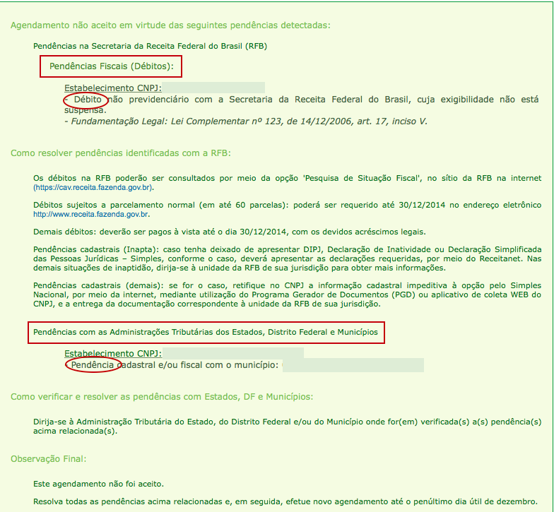

O Guia do Agendamento do Simples Nacional para 2016
Atualizado em 01/01/2016 | Tempo de leitura: 6 min
Atualizado em 01/01/2016 | Tempo de leitura: 6 min
Sobre a Contabilizei: A contabilidade online e inteligente que está ajudando micro e pequenas empresas de todo o Brasil a economizarem tempo e dinheiro. Saiba mais aqui.
Você sabia que com a publicação da Lei Complementar 147 de 2014, a maioria das empresas prestadoras de serviço poderão solicitar o enquadramento no Simples Nacional a partir de 2016?
Isso mesmo. O Simples Nacional é uma ótima opção para desburocratizar inúmeras obrigações acessórias e, na maioria das vezes, diminuir a carga tributária da sua empresa. Recomendo fortemente que você verifique a possibilidade de enquadramento da sua empresa no Simples e realize o agendamento do Simples Nacional.
Infelizmente, o governo não facilitou a operação e gerou uma grande confusão para os empresários que desejam optar ao Simples. Vamos desvendar o enigma.
Muito se fala que, entre 03/11 a 31/12 de 2015, as empresas poderão solicitar o agendamento do Simples Nacional.
O que acontece é que o governo liberou apenas um agendamento e não a opção de enquadramento no Simples Nacional . Portanto, não é possível solicitar o enquadramento no Simples Nacional antes de 01/01/2016.
Por enquanto, é possível realizar o agendamento de opção ao Simples Nacional.
Assim, o agendamento da opção ao Simples Nacional possui o seguinte objetivo:
Empresas que já reunem as condições necessárias para o enquadramento no Simples Nacional, porém não estão enquadradas.
Essas empresas utilizarão o agendamento para consultar se existe alguma pendência (débito ou administrativa) com os órgãos públicos. Não existindo a pendência, o agendamento automaticamente se transformará em solicitação de enquadramento no Simples Nacional em 01/01/2016.
Ou seja, se tudo estiver certo após verificação de pendência do agendamento, não é preciso fazer mais nada, pois com a solicitação deferida, o pedido de enquadramento será efetuado automaticamente pela Receita Federal.
.Veja, a seguir, como realizar o agendamento do Simples e os tipos de pendências que sua empresa pode ter.
Se você deseja consultar quais pendências sua empresa possui para solicitar o enquadramento do simples nacional em janeiro de 2015, siga o passo a passo descrito abaixo.
1. Acesse o site do Simples Nacional.
2. Clique em "Caso você não tenha o código de acesso...".

3. Insira o CNPJ da empresa e o CPF do responsável pela empresa perante a Receita Federal".

4. Insira o número do recibo de entrega da declaração do IRPF".
Caso o responsável pela empresa seja isento de declaração do IRPF, a Receita Federal solicita o número do título de eleitor e data de nascimento
5. Copie o código.

6. Passe o mouse em cima de "Simples/Serviços" e clique em "Opção".
7. Selecione a opção "Agendamento da Opção pelo Simples Nacional", clicando na chave.

8. Insira as informações CNPJ, CPF, Código de acesso e caracteres.

9. Clique em "Aceito".

10. Clique em "Iniciar verificação".
11. Resultado da consulta.
a) Sua empresa possui pendências administrativas e débitos:
Isto significa que você deverá resolver as pendências listadas até o dia 31/01/2015 para solicitar o enquadramento no Simples Nacional de 01 até 31 de janeiro de 2016.
Para solucionar as pendências, procure o seu contador ou acesse www.contabilizei.com.br e fale com a nossa equipe de contadores fanáticos.
b) Agendamento no Simples Nacional realizado com sucesso:
Pronto, sua empresa será enquadrada no Simples Nacional à partir de 01 de Janeiro de 2016.
Nenhuma ação é requerida na Receita Federal. A partir de 01 de Janeiro, realize a troca de regime de Lucro Presumido para Simples no site da prefeitura (o mesmo site que você utiliza para emitir suas notas fiscais).
- Tudo sobre o que você precisa saber sobre o Simples Nacional
- Como solicitar o Enquadramento no Simples Nacional
- Tabelas e Alíquotas de impostos do Simples Nacional
Até o dia 31 de dezembro de 2014, as empresas do lucro presumido que HOJE estão impedidas de optarem pelo Simples Nacional, somente poderão consultar as pendências que possuem frente os órgãos públicos para ingressarem no Simples Nacional.
O grande benefício deste procedimento de Agendamento do Simples Nacional, é para identificação das pendências que sua empresa possui e resolvê-las antes do prazo final de pedido de enquadramento no Simples (de 01 a 31 de Janeiro de 2016).
Saiba mais:
- Conheça as atividades permitidas no Simples Nacional e as respectivas alíquotas (inclusive as atividades permitidas a partir de 2015).
- Veja o Guia Completo do Simples Nacional somente com o que você precisa saber.
Caso tenha qualquer dúvida quanto a possibilidade de enquadramento no Simples, faça o seu comentário abaixo e será um prazer te ajudar.

Vítor Torres é fundador da Contabilizei (o jeito mais fácil e ecônomico de realizar contabilidade), empreendedor e investidor de startups.